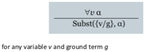
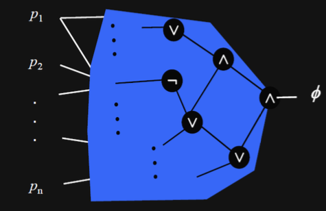

logic: generic method to deal with partial/imperfect/implicit information
we need:
knowledge-based/logical agents must be able to:
online/exploratory search: go to position, evaluate all options, possibly look ahead. have to re-evaluate current position.
assumes world contains facts
uses proposition symbols to state these facts.
pros:
cons:
an extension of propositional logic.
allows variables to range over atomic symbols in the domain.
assumes world contains:
Atomic sentence = predicate (term_1,..., term_n)
or term_1 = term_2
Term = function(term_1,..., term_n)
or constant
or variable
Complex sentences are made from atomic sentences using connectives.
∀ <variables> <sentence>
∀x P is true in a model m iff P is true with x being each possible object in the model
(you can roughly translate that to conjunctions)
typically used with ⇒
CARE: ∀x ∀y ≠ ∀y ∀x
∃ <variables> <sentence>
∃x P is true in a model m iff P is true with x being some possible object in the model
(you can roughly translate that to disjunction of instantiations of P)
typically used with ∧
watch out, if you use it with ⇒, it works even if the LHS is false!
CARE: ∃x ∃y ≠ ∃y ∃x
each quantifier can be expressed in terms of the other
e.g. these are the same:
undecidability
decidability
first-order logic: represents knowledge
propositional logic: used for reasoning ("propositionalisation")
then use reasoner to check for entailment of propositional logic knowledge base an decision query
every FOL KB can be propositionalised so as to preserve entailment
if a sentence α is entailed by an FOL KB, it is entailed by a finite subset of the propositionalised KB
every instantiation of a universally quantified sentence is entailed by it.

example:
∀x King(x) ∧ Greedy(x) ⇒ Evil(x) King(John) ∧ Greedy(John) ⇒ Evil(John) etc.
example:
∃x Crown(x) ∧ OnHead(x,John) Crown(C_1) ∧ OnHead(C_1, John)
check whether card is a jack:
KB |= PlayJack(x) ?
represent strategy:
∀x PlayJack(x) ⇔ Jack(x)
represent game information:
KB = {Jack(4), Jack(0), Jack(14), Jack(19)}
only play Jacks: check whether card is cheap
KB |= PlayCheap(x) ?
represent strategy:
∀x PlayCheap(x) ⇔ Jack(x) ∨ Queen(x) ∨ King(x)
represent game information:
KB = {Jack(4), Jack(9), Jack(14), Jack(19), Queen(5), ...}
TrumpMarriage(x) ⇔ Q(x) & Trump(x) & ∃y: SameColor(x,y) & K(y) & MyCard(y) SameColor(x,y) ⇔ (C(x) & C(y)) ∨ (D(x) & D(y)) ∨ (H(x) & H(y)) ∨ (S(x) & S(y))
interpretation: assignment of meaning to symbols of formal language
model: interpretation that satisfies defining axioms of knowledge base
m is a model of a sentence α if α holds in m.
M(a) is the set of all models of a.
each model specifies true/false for each proposition symbol (∧, ∨, ¬, ⇒, ⇐, ⇔)
the knowledge base (KB) entails α: α follows from the information in the knowledge base (KB |= α)
KB entails α iff α holds in all worlds where KB is true.
a knowledge base is the rules + observations.
a sentence is:
two statements are logically equivalent if they are true in same set of models:
α ≡ β iff α |= β and β |= α
sentences are true with respect to model and interpretation.
model contains objects and relations among them
interpretation specifies referents for:
an atomic sentence \(predicate(term_1, ..., term_n)\) is true iff the objects referred to by \(term_1,..., term_n\) are in the relation referred to by \(predicate\)
valid if it is true in all models.
e.g. True, A ∨ ¬A, A ⇒ A, (A ∧ (A e.g. True, A ∨ ⇒ B)) ⇒ B)
sound: if an algorithm \(|-\) only derives entailed sentences. i.e. if KB \(|-\) α also KB |= α
complete: if an algorithm derives any sentence that is entailed. i.e. KB |= α implies KB |- α
a calculus terminates if it finds entailed sentences in finite time.
a logic is decidable if there is sound and complete calculus that terminates.
enumerate interpretations and check that where KB is true, α is true.
| \(fact_1\) | \(fact_2\) | \(fact_3\) | \(KB\) | \(α\) |
|---|---|---|---|---|
| false | false | false | false | true |
| false | false | false | false | true |
| false | true | false | true | true |
algorithm:
for (m in truth assignments) {
if (m makes F true) return "satisfiable"
}
return "unsatisfiable"
Clever search (depth first, redundancy, heuristics)
Two families of efficient algorithms for propositional inference based on model checking
memo technique: the C in CNF for conjunction normal form
A PL formula is in CNF if it is a conjunction of disjunctions of literals.
calculating CNF:
when you have CNF, you can run the DPLL algorithm. determines if propositional logic sentence in CNF is satisfiable.
returns true if F is satisfiable, false otherwise.
basically assign values until contradiction, then backtrack.
Improving DPLL:
the algorithm:
dpll (F, literal) {
remove clauses containing literal
shorten clauses containing ¬literal
if (F contains no clauses)
return true
if (F contains empty clause)
return false
if (F contains a unit or pure literal)
return dpll(F, literal)
choose P in F
if (dpll(F, ¬P))
return true
return dpll(F, P)
}
used in DPLL to select proposition for branching
idea: identify most constrained variable, likely to create many unit clauses
MOM's heuristic: most occurrences in clauses of minimum length
why is it better than truth table enumeration?
proving entailment KB |= a by refutation:
Boolean satisfiability (SAT): is there an assignment to the \(p_1, p_2, ..., p_n\) variables such that \(\phi\) evaluates to 1?

SAT vs SMT:
SMT theories:
inference rule: logical form consisting of function taking premises, analyzing their syntax, and returning one or more conclusions
Modens Ponens: \(\frac{\alpha\implies\beta,\;\alpha}{\beta}\)
And-elimination: \(\frac{\alpha\land\beta}{\alpha}\)
logical equivalences used as rules: \(\frac{\alpha\iff\beta}{(\alpha\implies\beta)\land(\beta\implies\alpha)}\)
all logical equivalence rewriting rules:

Finding proofs is like finding solutions to search problems.
monotonicity: set of entailed sentences can only increase as info is added to the knowledge base.
FC is data-driven, automatic, unconscious:
BC is goal-driven, appropriate for problem-solving
a rule is sound if its conclusion is evaluated to true whenever the premise is evaluated to true.
can be shown to be sound using truth table:

properties resolution:
algorithm (again proof by refutation):